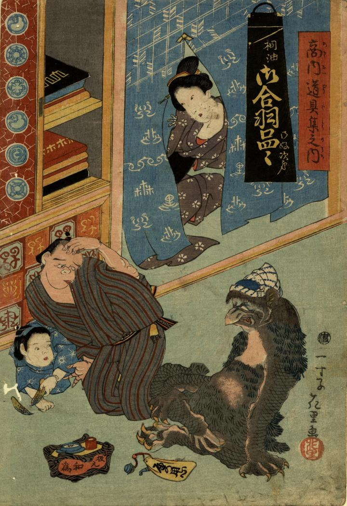

商家の店先で、あぐらをかいて座る河童。頭には手ぬぐいを乗せている。前身が緑色で肩と腹部は毛のようなもので覆われており、その他は鱗のような模様がみえる。手足には鋭い爪と水かきがはえている。
著作者：一寸子花里／出典：親書誌：U426_nichibunken_0273：桐油御合羽品々御好次第 商内道具集之内；トウユ オカッパ シナジナ オコノミ シダイ アキナイ ドウグシュウ ノ ウチ／日付：2014／資源識別子：U426_nichibunken_0273_0001_0000
Copyright (c)2010- International Research Center for Japanese Studies, Kyoto, Japan. All rights reserved.